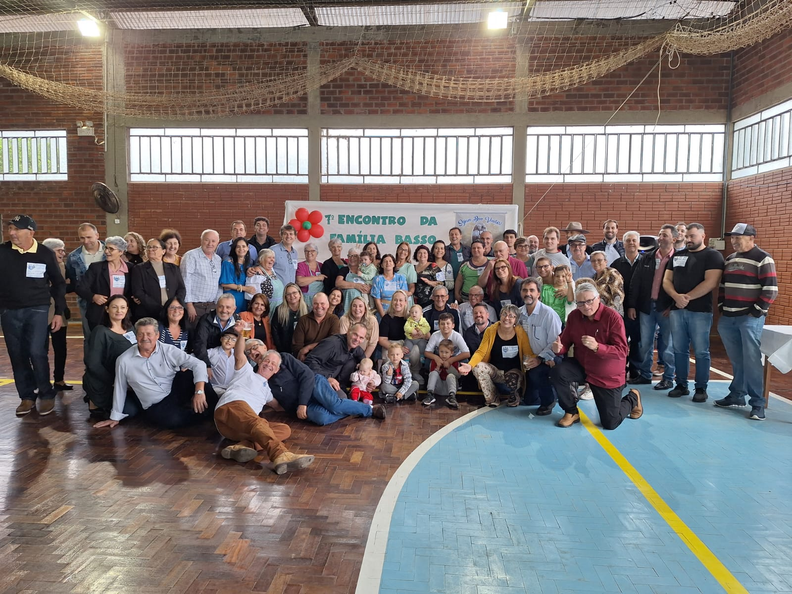

Família do patriarca Marco Basso é oriunda da região do Veneto, no norte da Itália. O Sr. Marco Basso é filho de Giuseppe Basso e Catterina Zonta, nasceu no dia 06/07/1874, em Cassola. Na época da vinda para o Brasil, ele morava com a família na comune de Schiavon, província de Vicenza, Itália.
O Senhor Marco Basso casou-se com a Sra. Catterina Viero, no dia 02 de fevereiro de 1908, na comune de Schiavon, onde passou a residir após o enlace. Provavelmente o casamento religioso tenha-se realizado na Igreja da foto abaixo.
 Igreja na comune de Schiavon, Itália.
Igreja na comune de Schiavon, Itália.
Neste município na Itália trabalharam na agricultura, como meeiros, ou seja, davam parte do produto que colhiam para o dono das terras. Frequentavam a Igreja aos domingos e dias santos e os filhos estudavam na escola da comunidade.
Na Itália nasceram os filhos Giuseppe, Silvestro (Silvio), Serafino (Antônio), Giovanni (João), Maria e Catterino. O filho mais velho Giuseppe não veio para o Brasil, pois estudava em um colégio interno, no qual trabalhava uma tia por parte da mãe; ele não queria trabalhar na agricultura (Fare il contadino).
Quando o General Mussolini assumiu a chefia do partido fascista na Itália, muitos italianos foram perseguidos e lhes foram tiradas as terras onde os agricultores trabalhavam, se fossem do partido contrário ao de Mussolini. Desgostoso com as atitudes e ações do novo Governo italiano, o Sr. Marco resolveu migrar para Brasil, junto com a família de um amigo. Talvez influenciados pela propaganda abaixo, e até iludidos, pois no Brasil não encontraram nada disso e tiveram que recomeçar suas vidas “quase do zero” com muito trabalho árduo e suor.
 Propaganda da época convidando os italianos a emigrar para o Brasil.
Propaganda da época convidando os italianos a emigrar para o Brasil.
O ano era 1924, quando a família de Marco Basso decidiu vir para o Brasil, fugindo do ditador Mussolini e da pobreza que assolava a Itália. Saíram do porto de Genova no dia 31 de maio e desembarcaram no Brasil dia 16 de junho de 1924, na Ilha das Flores, no estado do Rio de Janeiro. As datas constam nos passaportes cujas cópias estão no ícone “Documentos, passaportes”.
Emigraram para o Brasil quase 50 anos após ter início a imigração italiana para o Brasil, que começou no ano de 1875. O Sr. Marco Basso veio para o Brasil junto com a família do amigo Giovani Batista Zeneri (foto abaixo), que tinha um filho chamado de Luiz Batista Zeneri apelidado de “Gigio”, no mesmo navio, e das famílias Golin e Tormena, que moravam vizinhas na Itália, porém vieram para o Brasil em outros navios.
 Família do amigo Batista Zenere.
Família do amigo Batista Zenere.
Quando chegaram em terras gaúchas, o primeiro lugar que moraram foi em Coronel Pilar, no interior do município de Garibaldi, já no estado do Rio Grande do Sul. O avô foi trabalhar para uma família de sobrenome Pasini. Eles tinham uma cantina de vinho e muitas parreiras. Ficaram neste local em torno de dois anos. E ali nasceu a filha Thereza no dia 28/12/1924, pois o casal veio para o Brasil esperando outro filho.
Pelos relatos da história da imigração italiana no Brasil é provável que a família tenha chegado de barco até o município de São Sebastião do Caí. Dali seguiram no lombo de mulas e de carretas até Coronel Pilar, hoje município, na época distrito de Garibaldi. Nessa época o governo brasileiro já não distribuía mais terras no Brasil para as famílias dos imigrantes. E também não fornecia mais equipamentos usados na agricultura.
O sonho de ser dono de seu pedaço de terra, de ter a sua propriedade, motivou a família a mudar para o interior de Encantado, aonde vieram a residir na Linha Salvação – distrito de Relvado que mais tarde passou a município. Neste local ele e a família do amigo Batista Zeneri compraram 12 hectares de terra para cada um, ainda com muito mato para derrubar e fazer lavoura.
Nesta localidade, inesperadamente a esposa Catterina Viero veio a falecer no dia 28/12/1926, de complicações no parto de um filho ou filha, que também não sobreviveu. Na época e durante muito tempo no Brasil, os partos eram feitos em casa por uma parteira. A família de Marco Basso teve que enfrentar esse duro revés, mas permaneceu unida na fé e na crença de dias melhores. Os Basso receberam ajuda dos vizinhos e da comunidade, os irmãos mais velhos ajudavam os mais novos e foram tocando a vida até o Sr. Marco Basso casar-se novamente.
Após a morte da mãe Catterina a filha Thereza, ainda muito pequena, passou a residir e foi criada pela família de Ricieri Gaboardi que morava na vizinhança. O casal não tinha filhos naturais, mas adotou mais três crianças além de Thereza: Ernesto, Jandir e Isa.
No dia 01 de outubro de 1927 o patriarca Marco Basso, então viúvo, casou-se novamente com Maria Pedrassani. Do segundo casamento foram abençoados com o nascimento dos filhos Luiz Basso e Pedro Basso. Temos uma foto com a segunda esposa Maria Pedrassani de 25/06/1949, data do casamento do filho Catterino com Elvira Faraboli.
 Foto do casal Marco Basso e Maria Pedrassani em 25/06/1949, data do casamento do filho Catterino com Elvira Faraboli.
Foto do casal Marco Basso e Maria Pedrassani em 25/06/1949, data do casamento do filho Catterino com Elvira Faraboli.
Sobre a Itália, Marco Basso falava muito pouco, era nostálgico (talvez com saudades da Itália e do filho que lá deixara). Além de trabalhar na terra como meeiro, tinha uma vaca de leite, criavam galinhas, produziam a sua própria alimentação, levavam todo o esterco para espalhar na roça e a terra era toda entaipada devido à geografia da região, com muitos declives. Também falava que deveriam ter vindo para o Brasil no mínimo uns dez anos antes. Mas ficaram esperando que a vida melhorasse na Itália com a saída dos outros imigrantes, com isso retardaram sua vinda para o Brasil.
Vovô não gostava de arroz, pois na Itália comiam muita massa e não gostava de falar sobre a Itália com os filhos, porém com os vizinhos falava da mesma, e dizia que esperava encontrar no Brasil melhores condições de vida e de trabalho. Porém aqui a vida dos imigrantes sempre foi muito difícil; começou a mudar nas décadas de 70 e 80 quando a maioria dos descendentes mudou-se para trabalhar, estudar e viver nas cidades maiores de suas regiões e muitos para outros estados do Brasil.
Ele gostava de ir à bodega tomar uns aperitivos (cachaça e vinho), ia a cavalo e voltava para casa cantando. Certamente cantava as músicas do folclore italiano como Mazzolin di Fiori, Bella Polenta e Mérica Mérica. Na aba músicas deste site transcrevemos as letras de músicas do folclore italiano e outras.
Na sua propriedade aqui no Brasil cultivavam a terra plantando milho, feijão preto, trigo, mandioca, cana de açúcar, abóbora, aipim, batata doce, batata inglesa e outros produtos que eram usados na alimentação da família e na criação de gado e porcos. Tinham um pomar grande, horta e jardim colorido na frente de casa. Cultivavam uvas de vários tipos, as principais eram uvas Izabel e Barbera; tiveram até dois parreirais. Nos anos 50 vendiam parte da uva (barbera) para a cantina dos Irmãos Zanella, localizada na linha Cordilheira, próximo de Dr. Ricardo, que elaboravam os vinhos da foto abaixo. Também faziam vinho colonial e vinagre para consumo próprio e para venda na comunidade. O vinho do “nonno” tinha fama de ser de boa qualidade, face a experiência que trouxe do cultivo da uva na Itália e do período que trabalhou no interior de Garibaldi.
 Vinhos produzidos na Cantina dos Irmãos Zanella na Linha Cordilheira, próximo de Dr. Ricardo.
Vinhos produzidos na Cantina dos Irmãos Zanella na Linha Cordilheira, próximo de Dr. Ricardo.
Na segunda guerra mundial (1939 a 1945), que colocou em lados opostos os países do eixo (Alemanha, Itália e Japão) contra Inglaterra, Estados Unidos e demais países, houve forte impacto na vida dos imigrantes italianos e seus descendentes, gerando muito medo e incertezas em suas comunidades. Foram proibidos de falar o dialeto italiano em locais públicos conforme o cartaz abaixo. Os documentos e livros em italiano foram escondidos. Os nomes das pessoas foram abrasileirados, as associações culturais e recreativas foram fechadas ou tiveram que trocar de nome e as rádios e jornais foram censurados. Os descendentes tiveram que se afastar de suas culturas; somente nos anos de 1950 voltou a normalidade. Nesse período de incertezas muitos documentos e fotos foram perdidos e/ou extraviados.
 Aviso da época proibindo o uso do idioma italiano em locais públicos durante a 2ª Guerra Mundial.
Aviso da época proibindo o uso do idioma italiano em locais públicos durante a 2ª Guerra Mundial.
O patriarca Marco Basso teve uma vida longínqua para a época. Faleceu em 01/08/1962 com 88 anos de idade, e foi sepultado em Linha Salvação, Relvado. Na comunidade era tido como uma pessoa sábia pois viveu em duas pátrias, teve uma vida longa e acumulou muitas experiências, então muitas pessoas da comunidade vinham se aconselhar com ele, ouvindo suas opiniões e conselhos.
A família no Brasil sempre manteve contato com o filho Giuseppe que ficou na Itália. As cartas eram escritas no dialeto Vêneto pelo avô, pelos filhos mais velhos Serafino Antônio e Giovanni e pelo Sr. Abramo Busolli que foi professor em Linha Salvação.
O filho Giuseppe nunca veio para o Brasil. Alguns anos após a morte do avô Marco os contatos cessaram. Quase 40 anos depois, no ano de 2000, o neto André Basso foi passear na Itália e foi à procura dos primos na cidade de Monza. Com ajuda do cartório da cidade conseguiram o endereço. Porém passando no local da residência, a prima Irene Basso Pilati, filha de Giuseppe Basso, estava de férias com o marido na Sardenha, sul da Itália. Os contatos iniciaram posteriormente com o neto Sergio Basso através de cartas escritas na língua italiana, telefonemas, e posteriormente e-mails e WhatsApp.
O filho Giuseppe Basso que ficou na Itália seguiu a carreira militar e esteve na segunda guerra mundial. Mais tarde casou e teve somente uma filha chamada Irene. Esta casou-se com Fausto Pilati e não tiveram filhos. Vieram conhecer os primos brasileiros e o Brasil em março de 2007. Na época também participaram da celebração das bodas de ouro do Sr. Pedro e Margarida Basso. Mais dados estão no relato de vida de Giuseppe Basso.
O Sr. Marco Basso só tinha um irmão na Itália que se chamava Pedro Basso e este teve três filhos. O filho mais velho de Pedro, que não sabemos o nome, também foi servir e trabalhar para Exército Italiano, assim como o primo Giuseppe, filho mais velho de Marco Basso. Ambos foram servir na 2ª guerra mundial e depois seguiram a carreira militar e, segundo foi dito pela filha Irene, os primos mantiveram contato e se visitavam até falecerem na década de 1980. Também a prima Irene relatou que, após a morte do pai Giuseppe e do primo, eles perderam o contato com outros primos italianos de sobrenome Basso.
A sina da família Basso oriunda do patriarca Marco Basso era mesmo migrar: primeiro o patriarca Marco veio para o Brasil em 1924; depois na década de 40 o filho Sílvio foi trabalhar de motorista de caminhão em Chapecó SC; na década de 50 os filhos Serafino Antônio e João migraram também para o oeste do estado de Santa Catarina em busca de novas terras para trabalhar. No ano de 1962, mudou a filha Thereza, com o marido e filhos para o estado do Paraná.
Nas décadas de 70, 80 e 90 a maioria dos netos e bisnetos do avô Marco também migraram para morar nas cidades maiores das suas regiões, e até para outros estados: Mato Grosso do Sul, Minas Gerais, Paraná e São Paulo em busca de trabalho, estudo e melhores condições de vida.
Hoje temos descendentes (primos) residindo nas cidades Porto Alegre, Dr. Ricardo, Encantado, Lajeado, Pinto Bandeira, Santa Cruz do Sul, Taquara e Venâncio Aires. No estado de Santa Catariana, Chapecó, Águas Frias, Coronel Freitas, Abelardo Luz, Caibi e Joinville. No estado do Paraná, nas cidades de Curitiba, Medianeira, Serranópolis do Iguaçu e Cascavel. No estado de São Paulo, na capital São Paulo, Guarulhos e São José do Rio Preto. No Estado de Minas Gerais, nas cidades de Guarda Mor, Irai de Minas e Uberlândia. No Estado de Mato Grosso do Sul, Dourados, e no Mato Grosso em Cuiabá e no Distrito Federal em Brasília. Também há descendentes morando no exterior (Canadá).
Marco Basso partiu da Itália, abandonando a vida que construiu lá, deixando parentes, amigos, uma casa e um filho que jamais tornou a vê-lo. Atualmente os descendentes estão buscando entender melhor a história da vinda dos antepassados para o Brasil através dos encontros de família. Cabe a nós descendentes dizermos “muito obrigado” e agradecermos todo esforço que fizeram em deixar para nós um legado de trabalho, honestidade, esperança e crença na fé cristã.
O último encontro da família Marco Basso foi realizado junto com a festa do centenário da vida da família para o Brasil, no dia 29/04/2024 em Linha Salvação, Relvado.

Encontro da Família Basso em 29/04/2024, comemorando o centenário da vinda da família para o Brasil.
Notas:
*1. A vida na Itália só melhorou para as famílias italianas depois que ela se reergueu dos danos causados pela 2ª Guerra Mundial, em meados dos anos 60 em diante.
*2. A maioria dos livros de história consultados relata o início da imigração italiana o ano de 1875.
*3. A uva barbera é uma casta da família Vitis vinífera, a partir da qual são elaborados os vinhos Barbera d’Alba e Barbera d’Asti.